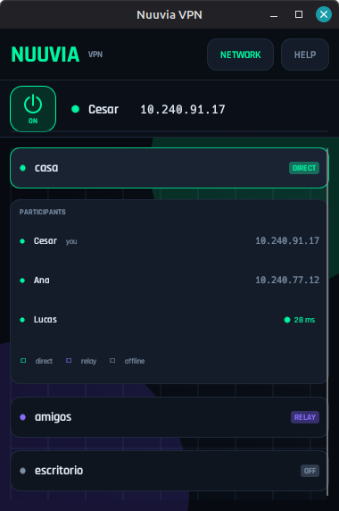
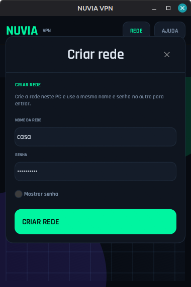
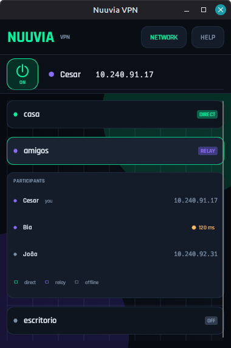
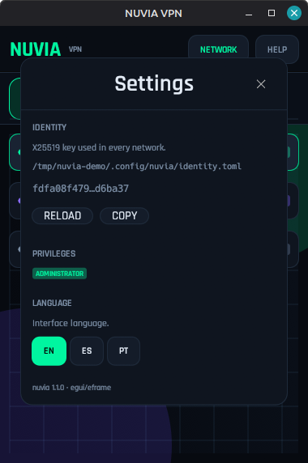

Per-room firewall
Global ALL, GAMES, BLOCK and CUSTOM profiles with per-room overrides. Allow exact TCP/UDP ports or ranges, or import the listening ports of your apps in one click.
v1.4.0 · Open source · Windows & Linux
Nuuvia is an encrypted Layer 2 VPN that puts every player on the same virtual Ethernet cable. Minecraft and other LAN games discover each other as if you were all in the same room.

Features
Everything needed for spontaneous multiplayer, with the boring network setup removed.
Global ALL, GAMES, BLOCK and CUSTOM profiles with per-room overrides. Allow exact TCP/UDP ports or ranges, or import the listening ports of your apps in one click.
Publish a room to the public directory and find it from Join Network with a name search and live player counts. Passwords are optional; use one for private groups.
Broadcast and multicast travel through the tunnel, so LAN world lists work like they do on a physical switch.
Nuuvia tries a direct peer path and the encrypted relay in parallel. You get the lowest latency the network allows.
All rooms share a single virtual adapter and IP. Keep several groups connected at once without extra setup.
See who is direct, who is on relay, and who is offline. Hover a player to check the measured ping and quality.
Noise XX authenticates peers and ChaCha20-Poly1305 protects traffic. The relay only ever sees ciphertext.
Just a room name and an optional password. No port forwarding, no invites, no config files, and a tray icon that keeps it running.
How it works
One person creates the room. Everyone else joins with the same name and password.
Open Nuuvia and use Network → Create network with a name and optional password. On the other PCs, open Join network and pick a public room or enter its name.
Start Minecraft after Nuuvia is connected, then open your world to LAN. Discovery routes are installed automatically.
The world shows up in the multiplayer list. With multiple rooms, every connected group appears in the same LAN list.



Security
Nuuvia assumes the network in the middle is hostile. The relay is useful, but it is never trusted with your traffic.
Read the architecture notesNoise XX verifies static X25519 keys before any game traffic is accepted.
ChaCha20-Poly1305 with explicit counters, AAD and replay protection. The relay cannot decrypt packets.
The room password becomes an Argon2id PSK locally. The server sees only a derived relay token.
MIT-licensed Rust code. Audit it, build it, or run it entirely on your own infrastructure.
Download
Free for Windows and Linux. No account, no subscription, no telemetry.
Windows 10 or 11, 64-bit. The installer includes the signed TAP driver.
Download installer Portable .zipDebian/Ubuntu package or a portable AppImage. Uses pkexec for TAP and routes.
Download .deb Portable AppImageRust workspace with the core, CLI, GUI, protocol and relay server.
View on GitHub All releasesInstaller filenames keep the original nuvia prefix for compatibility. Windows binaries are not code-signed yet, so SmartScreen may warn; you can build from source or verify the release checksums. Read the code signing policy.
FAQ
Still curious? Open an issue on GitHub.
Yes. Nuuvia is free and open source under the MIT license. There are no accounts, subscriptions, or ads.
Yes. Nuuvia carries Layer 2 broadcast and multicast, so Minecraft Java Edition LAN worlds appear in the multiplayer list as if everyone were on the same cable. It has been tested with Minecraft Java 1.8.5.
No. Download the app, create a room with a name and password, and share that name and password with the other players. The public rendezvous and relay are built in.
Yes. Open Network → Firewall to set a global policy, and use each room's FIREWALL menu or badge to override it. Choose ALL, GAMES, BLOCK or CUSTOM. CUSTOM supports TCP/UDP ports and ranges, ICMP, and importing the listening ports of programs running on the PC.
In Create network, mark Public network to list the room; the password is optional. In Join network, open Public networks and search by name. Selecting a room fills its name so you can join. A room without a password is open: anyone who knows its name can join and decrypt its traffic, so use a password for private groups.
Yes. Traffic uses Noise XX authentication and ChaCha20-Poly1305 encryption. The relay forwards only encrypted packets and never sees the room password or traffic keys.
Yes. Nuuvia advertises local endpoints and tries a direct LAN path first. If the router uses AP isolation or blocks client-to-client traffic, the encrypted relay can still connect players.
Up to 8 participants per room. You can keep multiple rooms connected at the same time; they share one local TAP and IP.
English, Spanish, and Portuguese. Choose the language in Settings → Language.
The binaries are not code-signed yet. You can build from source, inspect the code, or continue through SmartScreen if you trust the release.
Ready when you are
Install Nuuvia, create a room, and share the name and password.